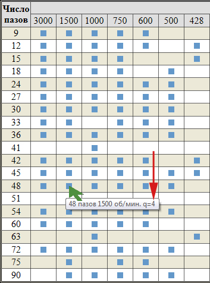

Перейти на главную страницу справочника.
Как найти нужную схему укладки.
- Что делать, если в справочнике нет нужной схемы укладки, или на электродвигатель с определённым количеством пазов в справочнике вообще нет схем.
Пример 1.
Для примера возьмём двигатель с количеством пазов Z1=12, 3000 об/мин.
- Допустим, что данный для примера двигатель пересчитали с трёхфазного на однофазный. По условиям расчёта нужна схема в которой рабочая и пусковая обмотки занимают одинаковое количество пазов статора. Открываем страницу справочника для однофазных электродвигателей с количеством пазов Z1=12 на 3000 об/мин, но там нужной схемы укладки нет.
- Число пазов на полюс и фазу данного двигателя q=3. Точно такое же "q" у однофазных двигателей: Z1=24 1500 об/мин, Z1=36 1000 об/мин, Z1=48 750 об/мин, Z1=60 600 об/мин, Z1=72 500 об/мин.
- У электродвигателей с одинаковым числом пазов на полюс и фазу "q" одинаковыми будут и схемы укладки обмоток, разница только в количестве пазов и оборотах.
- На странице Z1=24 1500 об/мин выбираем нужную нам схему с шагом рабочей обмотки у=6;4+4, пусковой обмотки у=6;4+4. Обрезаем схему до нужного нам количества пазов и получаем однофазную обмотку, где рабочая и пусковая обмотки занимают одинаковое количество пазов статора. Соответственно изменяются номера пусковых катушек.
{kind=link}
- При обратной ситуации, когда на 12 пазов схема есть, а нужной на 24 паза нет, мы дорисовываем схему до требуемого количества пазов.
- Основным условием для нахождения отсутствующей схемы является совпадение числа пазов на полюс и фазу.

Пример 2.
Для примера возьмём трёхфазный двигатель с количеством пазов Z1=96, 750 об/мин.
- В справочнике нет схем укладки на двигатели с количеством пазов Z1=96.
- У электродвигателей с одинаковым числом пазов на полюс и фазу "q" одинаковыми будут и схемы укладки обмоток, разница только в количестве пазов и оборотах.
- Число пазов на полюс и фазу данного двигателя q=4. Точно такое же "q" у трёхфазных двигателей: Z1=24 3000 об/мин, Z1=48 1500 об/мин, Z1=72 1000 об/мин. Выбираем любую схему укладки и дорисовываем до 96 пазов. Схему соединений точно так же дорисовываем до нужного числа катушек или находим в справочнике.

- Допустим, что мы выбрали схему укладки однослойной обмотки Z1=48 1500 об/мин с шагом у=15;13;11;9.
{kind=link}
- Распечатываем схему в двух экземплярах на принтере и раскладываем на столе. Второй лист как продолжение первого, соответственно изменяется нумерация пазов и катушек на правом листе. Перед Вами схема укладки Z1=96, 750 об/мин, 2р=8, q=4. Схему соединений для однослойных обмоток 2р=8 750 об/мин выбираем в зависимости от числа параллельных ветвей а=1, a=2, a=4.
{kind=link}
Схемы укладки на другие обороты для двигателей с Z1=96 возможно составить из схем для двигателей с Z1=48.
- Z1=96, q=8, 1500 об/мин.
- Z1=96, q=4, 750 об/мин.
- Z1=96, q=2,66, 500 об/мин.
- Z1=96, q=2, 375 об/мин.
- Z1=96, q=1,6, 300 об/мин.
- Z1=96, q=1,33, 250 об/мин.
- Z1=96, q=1, 187 об/мин.
- Z1=96, q=0,8, 150 об/мин.
- Z1=96, q=0,66, 125 об/мин.
- Z1=96, q=0,5, 94 об/мин.
- Схему соединений для Z1=96, в зависимости от оборотов и типа выбранной обмотки, находим на соответствующей странице справочника.
- Основным условием для нахождения отсутствующей схемы является совпадение числа пазов на полюс и фазу.
- При составлении схемы укладки у двигателей с дробным числом пазов на полюс и фазу схема может не получиться из-за одного неполного периода. Так же у двигателей с нечётным числом пазов. Поэтому проверяйте симметричность фаз и периодов.
- P.S.
Выше сказанные способы нахождения нужной схемы укладки подойдут для однофазных, трёхфазных, многоскоростных и электродвигателей с совмещёнными обмотками.
03.04.2015 г.